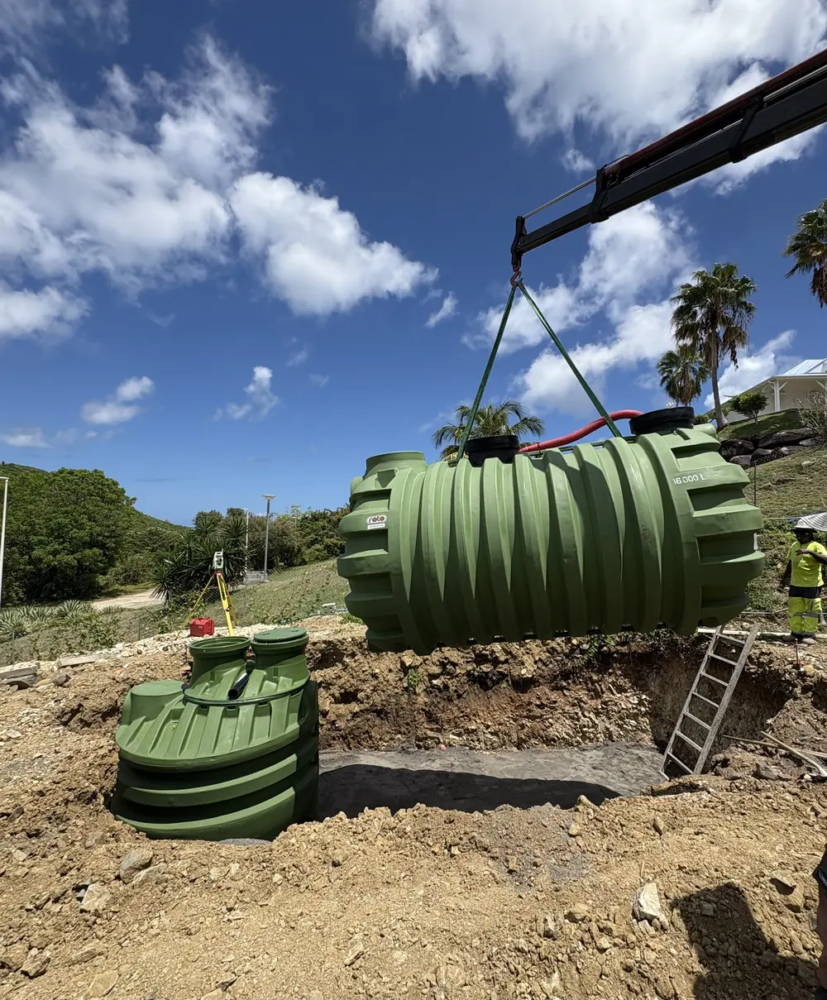
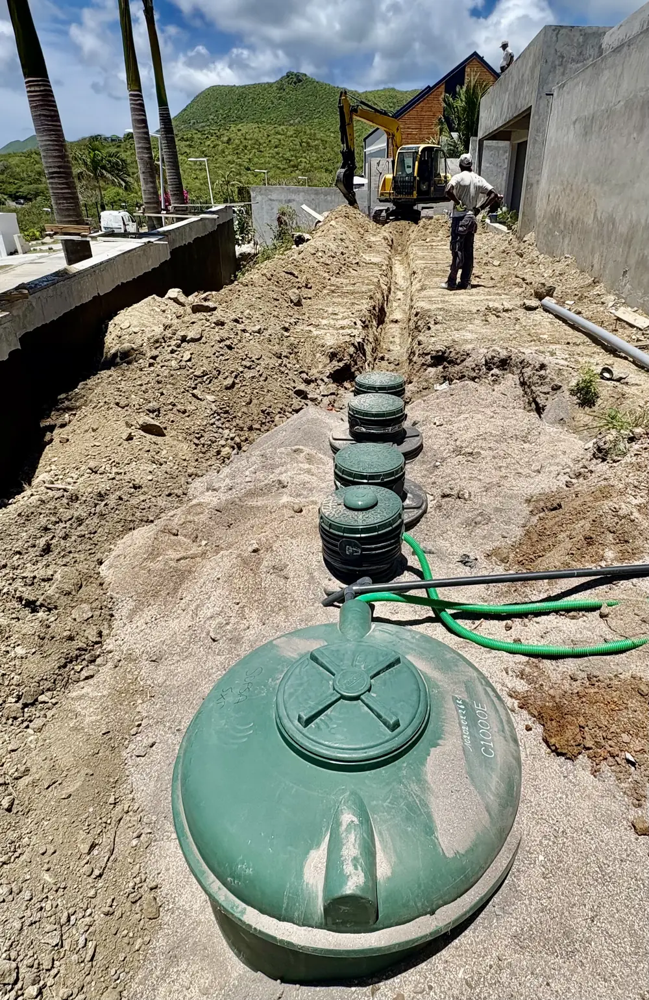
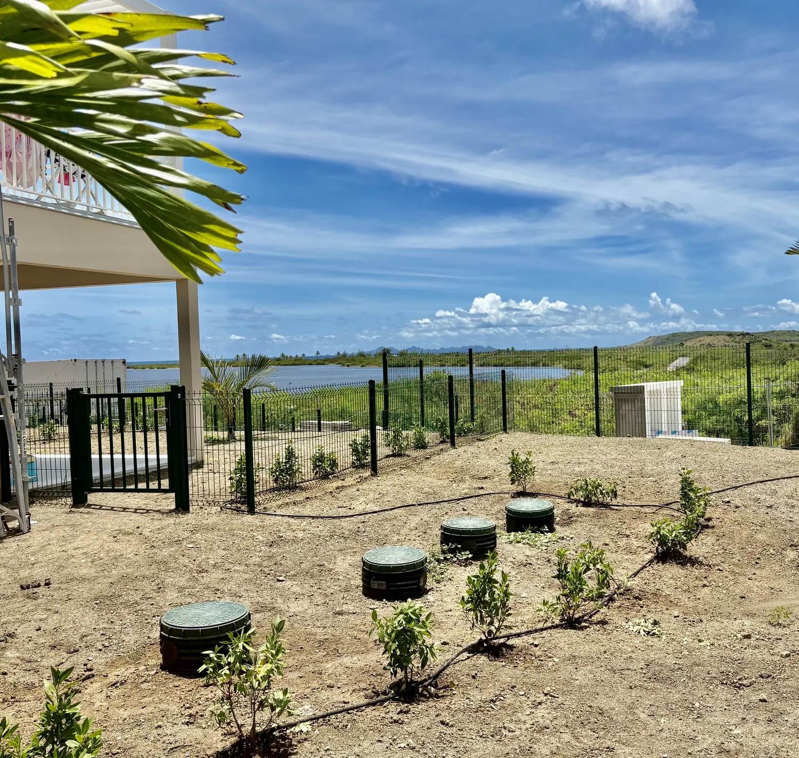
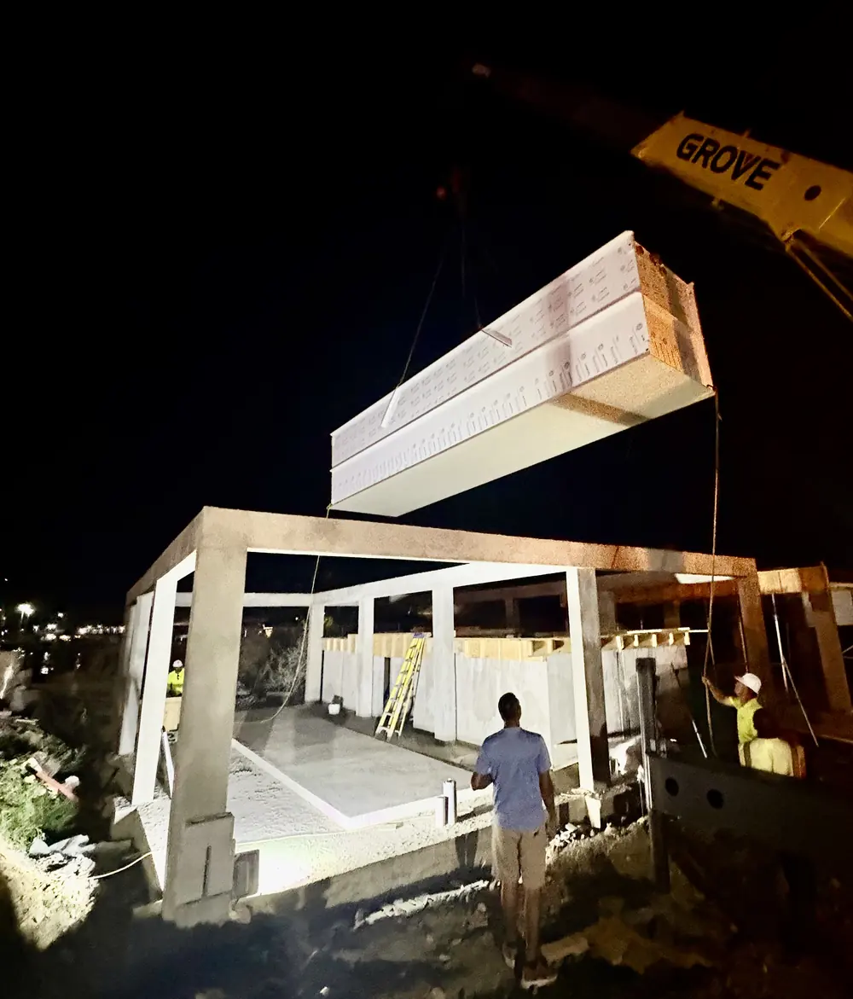

Pour les constructions non raccordées au réseau collectif, Geotech Caraïbes s'associe à Guamikeni — Water Management Company, spécialiste du traitement des eaux usées décentralisé aux Caraïbes. Ensemble, nous couvrons toute la chaîne : étude, terrassement, pose de la filière, mise en service et maintenance.
Toutes les parcelles de Saint-Martin ne sont pas desservies par un réseau public d'assainissement. Pour une villa isolée, un lotissement en secteur non raccordé ou un établissement en zone rurale, l'assainissement non collectif (ANC) traite les eaux usées directement sur la parcelle, par une filière dimensionnée pour le terrain et son usage.
Parce que cette discipline mêle génie civil et traitement de l'eau, Geotech Caraïbes s'associe à un spécialiste reconnu de la Caraïbe — Guamikeni — pour couvrir toute la chaîne, de l'étude à la maintenance.
Spécialiste de l'assainissement décentralisé et du traitement des eaux usées, Guamikeni — Water Management Company est implanté à Saint-Martin / Sint Maarten et à Antigua, et intervient dans toute la Caraïbe. Sa mission : « Protect Caribbean land and water ».
Membre de la Caribbean Water & Wastewater Association (CWWA), Guamikeni conçoit des solutions écologiques pour les hôtels, résidences, villas, sites industriels et marinas.
Découvrir Guamikeni →Calculs hydrauliques, dimensionnement de la filière, choix des équipements et plans techniques — par Guamikeni.
Fouilles, lit de pose, remblaiement et raccordements, avec le parc matériel et les équipes de Geotech Caraïbes.
Pose des cuves et dispositifs, travaux MEP (mécanique, électricité, plomberie) et mise en route de la filière.
Contrats d'entretien, curage, inspection caméra, analyses d'eau et interventions d'urgence 7j/7 — par Guamikeni.
Tout commence par le terrassement : fouille, lit de pose et mise à niveau. Les cuves de traitement sont ensuite descendues à la grue et calées avec précision, même sur les parcelles en pente qui font le quotidien de l'île.
Un travail de génie civil soigné conditionne la durée de vie de l'installation : c'est le cœur de métier des équipes de Geotech Caraïbes.


Tranchée, alignement des dispositifs, raccordements hydrauliques : chaque élément de la filière est posé dans l'ordre et contrôlé avant remblaiement.
L'ensemble est dimensionné par Guamikeni pour le débit réel du projet et les caractéristiques du sol — gage de conformité et de performance dans la durée.
Une fois les travaux achevés, seuls les regards de visite restent accessibles pour l'entretien. L'installation disparaît sous un terrain remis en état, prête à protéger durablement le lagon, les nappes et le littoral.


Levage d'ouvrages lourds, interventions en site contraint, et quand il le faut, travail de nuit : nous adaptons les moyens à chaque contrainte pour tenir les délais sans rien céder sur la qualité.
Cette offre s'adresse aux particuliers comme aux professionnels, pour une installation neuve comme pour la mise à niveau d'un dispositif existant :
L'assainissement collectif raccorde votre construction à un réseau public qui achemine les eaux usées vers une station d'épuration. L'assainissement non collectif (ANC) traite les eaux usées directement sur la parcelle, par une filière autonome, lorsque le raccordement au réseau public n'est pas possible. Pour les réseaux collectifs, voir notre page assainissement.
L'ANC combine deux métiers : le génie civil (terrassement, pose, raccordements), cœur de métier de Geotech Caraïbes, et l'ingénierie du traitement de l'eau (dimensionnement, équipements, mise en service, maintenance), spécialité de Guamikeni. En réunissant les deux, nous vous offrons un interlocuteur unique pour une installation fiable, conforme et suivie dans la durée.
Oui. La mise à niveau ou le remplacement d'une installation ancienne ou non conforme fait partie des prestations proposées, qu'il s'agisse d'une maison, d'une villa ou d'un établissement recevant du public. Nous évaluons l'existant, proposons la filière adaptée et réalisons les travaux.
Oui. Geotech Caraïbes intervient sur l'ensemble de l'île, côté français comme côté néerlandais. Guamikeni est par ailleurs implanté à Saint-Martin / Sint Maarten et à Antigua, et intervient plus largement dans la Caraïbe.
Geotech Caraïbes et Guamikeni vous accompagnent de l'étude à la maintenance de votre installation d'assainissement non collectif à Saint-Martin. Devis gratuit, réponse rapide.